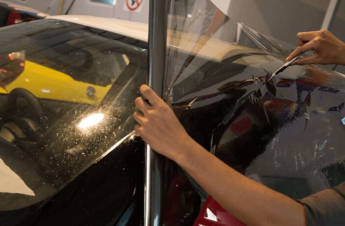

¿Cuál es la opacidad permitida?
En los automóviles, los parabrisas y los vidrios de las puertas delanteras deben tener una luminosidad superior o igual al 70 %; Leer Más.
¿Hay diferencias si el carro es blindado?
Sí. En los casos en los que a los carros blindados o con vidrios de seguridad y resistentes a balas se les instale el polarizado, Leer Más.
¿Cuál es el mejor papel polarizado para tu auto?
La calidad del papel ahumado influye directamente en la duración y cobertura que este tendrá al ser instalado en el auto, Leer Más.